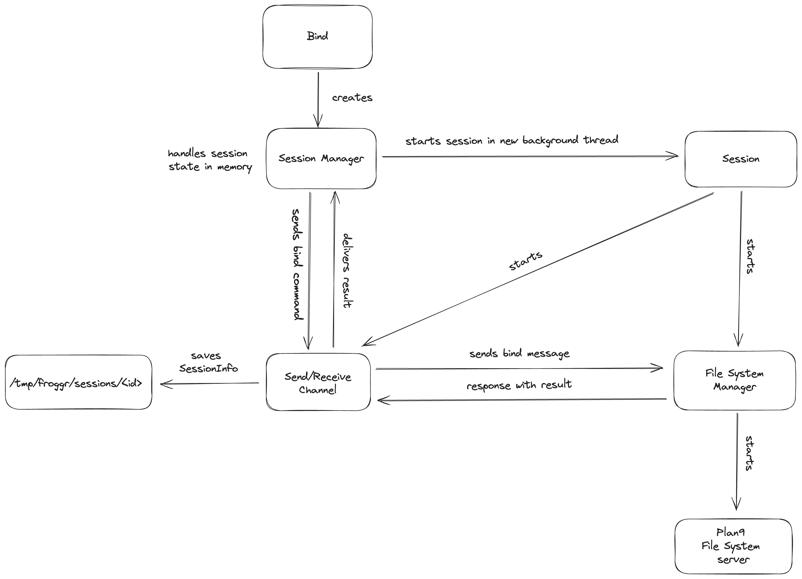

froggr 🐸
Simple file system implementation using the 9P protocol
froggr is a modern implementation of the Plan 9 filesystem protocol (9P), focusing on providing flexible namespace management through bind operations.
What is 9P?
The 9P protocol is a network protocol developed for the Plan 9 operating system, designed to provide transparent access to resources across a network. One of its key features is the ability to manipulate the namespace through operations like bind.
Key Features
- Flexible Namespace Management: Modify your filesystem view without affecting the underlying system
- Multiple Binding Modes: Support for Replace, Before, After, and Create modes
- Union Directories: Combine multiple directories into a single view
- Custom Environments: Create isolated filesystem environments
Quick Links
Getting Started
Design Principles
graph TD
subgraph CLI
A[CLI Interface] --> B[Command Parser]
B --> C{Commands}
C -->|Bind| D[Bind Command]
C -->|Mount| E[Mount Command]
C -->|Session| F[Session Management]
end
subgraph Session Management
G[Session Manager] --> H[Session State]
G --> I[Named Pipes]
H --> J[Session Info Files]
G --> K[Process Management]
end
subgraph Filesystem Operations
L[Filesystem Manager] --> M[9P Protocol]
L --> N[Mount Operations]
L --> O[Bind Operations]
end
D --> G
E --> G
F --> G
I --> L
K --> L
subgraph Storage
P[/tmp/froggr/sessions/]
J --> P
I --> P
end
Froggr is built on several key design principles that guide its development and usage:
1. Plan 9 Inspiration
Froggr draws heavy inspiration from Plan 9's filesystem architecture, particularly its approach to namespace management. Like Plan 9, Froggr treats everything as a file and uses filesystem operations to manage system resources.
2. Per-Process Namespaces
Each Froggr session maintains its own filesystem namespace, similar to Plan 9's per-process namespaces. This isolation allows for:
- Independent namespace modifications
- Process-specific views of the filesystem
- Clean separation between different applications or services
3. Union Directories
Following Plan 9's union mount concept, Froggr allows multiple directories to be combined into a single view. This enables:
- Layered filesystem composition
- Dynamic content aggregation
- Flexible resource organization
4. Bind Operations
Bind operations are fundamental to Froggr's namespace manipulation:
- Replace: Complete replacement of target content
- Before: Prepend content to existing view
- After: Append content to existing view
- Create: Create new bindings for non-existent paths
5. Server-Based Architecture
Froggr implements a 9P filesystem server that:
- Handles client requests
- Manages namespace operations
- Provides filesystem access
- Maintains session state
6. State Management
Each session's state is:
- Persisted in /tmp/proc/
- Tracked independently
- Cleaned up automatically
- Recoverable after crashes
7. Clean Separation of Concerns
The system is designed with clear separation between:
- Filesystem operations
- Namespace management
- Session handling
- State persistence
- Client interactions
8. Explicit Over Implicit
Froggr favors explicit operations:
- Clear bind modes
- Visible namespace changes
- Traceable state modifications
- Documented side effects
9. Fail-Safe Operations
Operations are designed to:
- Validate inputs
- Check permissions
- Handle errors gracefully
- Clean up on failure
- Maintain consistency
10. Unix Integration
While inspired by Plan 9, Froggr integrates well with Unix systems:
- Works with existing filesystems
- Respects Unix permissions
- Uses familiar path conventions
- Provides Unix-like tools
Bind Operation Design
The bind operation is one of the fundamental mechanisms in Froggr's namespace management system. It allows for dynamic modification of the filesystem view by overlaying directories and files.
Process Overview

The bind operation follows a specific process flow:
-
Request Initiation
- Client sends bind request with source and target paths
- Bind mode is specified (Replace, Before, After, Create)
-
Validation
- Source path existence check
- Target path validation
- Permission verification
- Mode-specific requirements check
-
Namespace Update
- Current namespace state is preserved
- New binding is created according to specified mode
- Namespace tree is updated
- Changes are atomically applied
-
State Management
- Session state is updated
- New binding is recorded
- State is persisted to disk
- Recovery information is saved
-
Completion
- Success/failure status is determined
- Client is notified of result
- Namespace becomes immediately consistent
Key Design Aspects
Atomicity
- All bind operations are atomic
- Namespace remains consistent during updates
- Failures result in complete rollback
Isolation
- Each session maintains independent bindings
- Changes don't affect other sessions
- Namespace modifications are session-local
Persistence
- Bindings are recorded in session state
- State is saved in /tmp/proc/
- Recovery is possible after crashes
- Clean session termination removes state
Flexibility
- Multiple bind modes supported
- Dynamic namespace modification
- Runtime configuration possible
- Stackable directory views
This design ensures that bind operations are reliable, predictable, and maintainable while providing the flexibility needed for complex namespace configurations.
Mount Operation Design
The mount operation is a core functionality in Froggr that enables attaching directories into the filesystem hierarchy using the 9P protocol.
Process Overview
sequenceDiagram
participant User
participant CLI
participant SessionManager
participant Session
participant FilesystemManager
participant 9P
User->>CLI: frg mount /source /target
CLI->>SessionManager: create_session(/target)
alt Session exists for target
SessionManager-->>CLI: Return existing session ID
else No existing session
SessionManager->>Session: Create new session
Session->>FilesystemManager: Initialize
Session-->>SessionManager: Return new session ID
end
CLI->>SessionManager: send_mount_command(session_id, /source, /target)
SessionManager->>Session: Send via named pipe
Session->>FilesystemManager: mount(/source, /target)
FilesystemManager->>9P: Setup 9P connection
9P-->>FilesystemManager: Connection established
FilesystemManager-->>Session: Mount successful
Session->>SessionManager: Update session state
SessionManager-->>CLI: Operation complete
CLI-->>User: Mount successful
Key Components
Session Management
- Each mount operation is associated with a session
- Sessions can be reused for the same target directory
- Session state persists mount information
- Clean session termination unmounts all directories
9P Protocol Integration
- Uses 9P protocol for filesystem operations
- Supports remote and local mounts
- Maintains connection state
- Handles protocol-specific messaging
Mount Points
- Target directory becomes a mount point
- Source directory content becomes accessible
- Permissions are preserved
- Path resolution follows mount hierarchy
Usage Examples
Basic Mount
# Mount a local directory
frg mount /source/dir /mount/point
# Mount with custom node identifier
frg mount /source/dir /mount/point custom-node
Common Use Cases
-
Local Directory Mounting
frg mount /home/user/data /mnt/data -
Remote Directory Mounting
frg mount remote:/data /mnt/remote-data -
Temporary Mounts
frg mount /tmp/source /mnt/temp
Error Handling
The mount operation includes robust error handling for common scenarios:
- Target directory doesn't exist
- Source is not accessible
- Permission denied
- Network connection issues (for remote mounts)
- Session creation failures
Best Practices
-
Path Selection
- Use absolute paths for clarity
- Ensure target directory exists
- Verify permissions beforehand
-
Session Management
- One session per target directory
- Clean up unused sessions
- Monitor session state
-
Resource Management
- Unmount when no longer needed
- Don't mount over existing mount points
- Check available resources
Implementation Details
Mount Process Steps
-
Initialization
- Validate paths
- Check permissions
- Create/reuse session
-
Setup
- Establish 9P connection
- Configure mount parameters
- Prepare target directory
-
Execution
- Perform mount operation
- Update session state
- Verify mount success
-
Cleanup
- Handle any errors
- Update mount registry
- Log operation result
State Management
The mount operation maintains state information including:
- Active mount points
- Session associations
- Connection details
- Resource usage
Troubleshooting
Common issues and solutions:
-
Mount Failed
- Check source directory exists
- Verify target directory permissions
- Ensure no conflicting mounts
-
Session Issues
- List active sessions (
frg session -l) - Check session state
- Try purging dead sessions
- List active sessions (
-
Permission Problems
- Verify user permissions
- Check directory ownership
- Review mount point access
See Also
Session Management
Session management is a critical component of Froggr that handles the lifecycle of filesystem operations and maintains state across multiple commands.
Architecture Overview
graph TD
subgraph Session Creation
A[User Command] --> B[SessionManager]
B --> C{Session Exists?}
C -->|Yes| D[Reuse Session]
C -->|No| E[Create New Session]
E --> F[Initialize State]
end
subgraph Session State
G[Active Mounts]
H[Active Binds]
I[Process Info]
J[Named Pipes]
end
subgraph Lifecycle Management
K[Monitor Health]
L[Handle Cleanup]
M[State Recovery]
end
F --> G
F --> H
F --> I
F --> J
D --> G
K --> L
L --> M
Session Components
Session Identity
- Unique session ID (UUID)
- Process ID (PID)
- Root directory path
- Creation timestamp
State Management
- Active mount points
- Active bind points
- Resource tracking
- Operation history
Communication Channels
- Named pipes for IPC
- Command routing
- State updates
- Error reporting
Lifecycle Phases
-
Creation
- Generate session ID
- Fork process
- Initialize state
- Setup communication channels
-
Operation
- Handle mount/bind requests
- Maintain state consistency
- Process commands
- Monitor health
-
Termination
- Clean up resources
- Unmount filesystems
- Remove bind points
- Delete session files
Command Interface
List Sessions
frg session -l
frg session --list
Kill Session
frg session -k <session-id>
frg session --kill <session-id>
Purge All Sessions
frg session -p
frg session --purge
Show Session Details
frg session <session-id>
State Persistence
Sessions maintain state in /tmp/froggr/sessions/:
- Session information files
- Named pipes for IPC
- Recovery data
- Operation logs
Error Handling
Common Issues
-
Dead Sessions
- Automatic detection
- Resource cleanup
- State recovery
-
Resource Leaks
- Periodic validation
- Orphan cleanup
- Resource limits
-
Communication Failures
- Retry mechanisms
- Error reporting
- Fallback options
Best Practices
-
Session Management
- Regular session cleanup
- Monitor active sessions
- Verify session health
-
Resource Usage
- Limit concurrent sessions
- Clean up unused sessions
- Monitor system resources
-
Error Recovery
- Implement proper cleanup
- Handle crashes gracefully
- Maintain state consistency
Implementation Details
Session Creation
#![allow(unused)] fn main() { // Example session creation let session_manager = SessionManager::new()?; let session_id = session_manager.create_session(root_path)?; }
State Updates
#![allow(unused)] fn main() { // Example state update session.notify_mount_success(source, target)?; session.notify_bind_success(source, target)?; }
Cleanup
#![allow(unused)] fn main() { // Example cleanup session_manager.kill_session(session_id)?; session_manager.purge_sessions()?; }
See Also
9P Protocol Integration
The 9P protocol is the foundation of Froggr's filesystem operations, providing a lightweight and efficient way to implement distributed file systems.
Protocol Overview
sequenceDiagram
participant Client
participant Server
participant Filesystem
Client->>Server: Tversion
Server-->>Client: Rversion
Client->>Server: Tattach
Server-->>Client: Rattach
loop File Operations
Client->>Server: Twalk
Server-->>Client: Rwalk
Client->>Server: Topen
Server-->>Client: Ropen
Client->>Server: Tread/Twrite
Server->>Filesystem: Process I/O
Filesystem-->>Server: I/O Result
Server-->>Client: Rread/Rwrite
end
Client->>Server: Tclunk
Server-->>Client: Rclunk
Key Features
Message Types
-
Version & Authentication
- Tversion/Rversion
- Tauth/Rauth
- Tattach/Rattach
-
File Operations
- Twalk/Rwalk
- Topen/Ropen
- Tread/Rread
- Twrite/Rwrite
-
Metadata Operations
- Tstat/Rstat
- Twstat/Rwstat
- Tclunk/Rclunk
- Tremove/Rremove
Protocol Characteristics
- Stateless design
- Simple message format
- Low overhead
- Platform independent
Implementation
Filesystem Setup
#![allow(unused)] fn main() { // Initialize 9P filesystem let fs = NineP::new(root_path)?; }
Message Handling
#![allow(unused)] fn main() { // Example message processing match message { Tmessage::Walk { fid, newfid, wnames } => { // Handle walk operation } Tmessage::Read { fid, offset, count } => { // Handle read operation } } }
Error Handling
Common Errors
-
Protocol Errors
- Version mismatch
- Authentication failure
- Invalid message format
-
Operation Errors
- Permission denied
- File not found
- I/O errors
-
Connection Errors
- Network timeout
- Connection reset
- Resource exhaustion
Performance Considerations
Optimization Techniques
-
Message Batching
- Combine related operations
- Reduce round trips
- Optimize bandwidth usage
-
Caching
- File data caching
- Directory entry caching
- Metadata caching
-
Resource Management
- Resource pooling
- Operation timeouts
- Resource limits
Security
Security Measures
-
Authentication
- User verification
- Access control
- Capability management
-
Transport Security
- Optional encryption
- Message integrity
- Secure channels
-
Permission Management
- File permissions
- Directory access
- User mapping
Best Practices
-
Protocol Usage
- Follow 9P specifications
- Handle all message types
- Implement proper error handling
-
Performance
- Optimize message handling
- Implement caching
- Monitor resource usage
-
Security
- Implement authentication
- Validate input
- Manage permissions
Troubleshooting
Common issues and solutions:
-
Protocol Issues
- Check message format
- Verify protocol version
- Review error responses
-
Performance Problems
- Monitor message patterns
- Check resource usage
- Optimize operations
-
Access Issues
- Verify permissions
- Check authentication
- Review access control
See Also
Bind Operations
The P9 protocol for file systems requires a unique feature called bind, which allows for flexible control over the namespace
(file hierarchy). The bind operation maps a file, directory, or another namespace tree into a new location in the namespace.
Available Modes
froggr supports four binding modes:
- Replace Mode: Replace existing content
- Before Mode: Add content with higher priority
- After Mode: Add content with lower priority
- Create Mode: Create mountpoint if needed
Each mode provides different behaviors for resolving file lookups when multiple resources are mapped to the same namespace.
Replace Mode
The Replace mode is the default binding mode in froggr. It completely replaces whatever was previously mounted at the mountpoint with the new source.
Usage
frg bind src mountpoint
Behavior
The src completely overrides any existing content at the mountpoint. After the bind operation, only the contents of src will be visible at the specified mountpoint.
Examples
Replacing Configuration Directory
Temporarily replace a default configuration directory with a test version:
frg bind /test/config /etc
After this command, processes will see /test/config contents instead of the original /etc.
Custom Toolchain
Redirect access to /bin to a custom toolchain directory for development:
frg bind /custom/tools/bin /bin
This replaces the system binaries with your custom tools.
Before Mode
The Before mode places the new source before the existing contents of the mountpoint in the lookup order.
Usage
frg bind -b src mountpoint
Behavior
When a lookup occurs, froggr searches src first, and if the file isn't found there, it searches the original mountpoint. This creates a layered view where new content takes precedence over existing content.
Examples
Custom Binary Directory
Add custom binaries that take precedence over system binaries:
frg bind -b /custom/bin /bin
In this case, /custom/bin/ls will be used instead of /bin/ls if both exist, while other commands will fall back to /bin.
Development Libraries
Prioritize development versions of libraries:
frg bind -b /dev/libs /usr/lib
This allows testing new library versions while maintaining access to the system libraries as fallback.
After Mode
The After mode appends the new source to the mountpoint's search path, making it a fallback option.
Usage
frg bind -a src mountpoint
Behavior
froggr resolves lookups by searching the original mountpoint first, and if the file isn't found there, it checks the src. This maintains existing content's priority while providing additional fallback options.
Examples
Additional Fonts
Add extra fonts while maintaining system defaults:
frg bind -a /extra/fonts /fonts
System fonts remain the primary source, with additional fonts available when needed.
Configuration Extensions
Add supplementary configuration files:
frg bind -a /additional/config /etc
This ensures /etc retains its default behavior but gains additional configuration files when defaults don't exist.
Create Mode
The Create mode ensures the mountpoint exists before performing the bind operation.
Usage
frg bind -c src mountpoint
Behavior
Before performing the bind operation, froggr checks if the mountpoint exists. If it doesn't, the directory is created automatically. After creation (if needed), it performs a standard replace binding.
Examples
Log Directory Setup
Create and bind a custom log directory:
frg bind -c /data/logs /var/log/app
This creates /var/log/app if it doesn't exist, then binds /data/logs to it.
Development Environment
Set up a new development environment:
frg bind -c /dev/workspace/bin /opt/tools
Creates /opt/tools if needed, then binds the workspace binaries.
Union Directories
Union directories allow you to combine multiple sources into a single view, creating a merged namespace.
Creating Union Directories
You can create union directories by using multiple bind operations with different modes. The order of operations matters, as it determines the lookup priority.
Basic Example
frg bind -b /local/bin /bin
frg bind -a /backup/bin /bin
This creates a three-layer union:
/local/bin(highest priority)- Original
/bin(middle priority) /backup/bin(lowest priority)
Common Use Cases
Development Environment
Create a layered development environment:
frg bind -b /dev/override /usr
frg bind -a /dev/fallback /usr
This allows:
- Development files to override system files
- System files to serve as the default
- Fallback files for missing components
Configuration Management
Manage multiple configuration sources:
frg bind -b /etc/custom /etc
frg bind -a /etc/defaults /etc
This creates a hierarchy where:
- Custom configurations take precedence
- System configurations remain as default
- Default configurations serve as fallback
Custom Environments
CLI Reference
Complete reference for the froggr command-line interface.
Global Options
frg [OPTIONS] <COMMAND>
Options
-v, --verbose: Enable verbose logging-q, --quiet: Suppress all output except errors-h, --help: Show help information
Commands
bind
Bind a source directory to a mountpoint.
frg bind [OPTIONS] <SOURCE> <MOUNTPOINT>
Options
-b, --before: Bind source before existing content-a, --after: Bind source after existing content-c, --create: Create mountpoint if it doesn't exist-r, --recursive: Recursively bind subdirectories
Examples
# Replace binding
frg bind /source /dest
# Before binding with mountpoint creation
frg bind -b -c /custom/bin /opt/tools
# After binding
frg bind -a /fallback/config /etc
Installation
System Requirements
- Unix-based operating system (Linux, macOS)
- Linux kernel 4.18 or later
- FUSE filesystem support
Installing FUSE
Before installing froggr, you need to install FUSE on your system:
Ubuntu/Debian
sudo apt-get install fuse
macOS
brew install macfuse
Note: On macOS, you may need to allow the system extension in System Preferences > Security & Privacy after installing macFUSE.
Fedora
sudo dnf install fuse
Arch Linux
sudo pacman -S fuse
From Source
Prerequisites
- Rust toolchain (1.70 or later)
- Cargo package manager
- FUSE installed (see above)
Steps
- Clone the repository:
git clone https://github.com/yourusername/froggr.git
cd froggr
- Build and install:
cargo install --path .
This will install the frg binary to your cargo bin directory (usually ~/.cargo/bin).
Using Cargo
Install directly from crates.io:
cargo install froggr
Verifying Installation
After installation, verify that froggr is working correctly:
frg --version